Manuscript Overview
Automated driving in dense mixed traffic requires anticipating interactions between motor vehicles and heterogeneous vulnerable road users (VRUs) sharing limited road space. Uneven trajectory-data coverage of narrow streets and roadside activity restricts the development and evaluation of models for these environments. We present VRUD, a drone-based dataset collected at three urban mixed-traffic sites, comprising 8.50 hours, 30,554 retained trajectories, and seven road-user categories. VRUs constitute 74.40% of its retained trajectory inventory. Encounters are organized around a selected motor vehicle, preserving surrounding participants and their successive or concurrent behavior relations. Complementary spatial and temporal safety-surrogate measures characterize behavior- and participant-dependent interaction conditions. Forecasting experiments highlight the value of representative mixed-traffic training data and surrounding trajectories, while behavior-conditioned evaluation exposes differences hidden by aggregate errors. Together, the trajectory resource, interaction profiles, and forecasting benchmark support the study of heterogeneous mixed traffic and the selection of test conditions through behavioral coverage and safety criticality. VRUD can support research on interaction-aware prediction, cross-domain generalization, and scenario mining and generation for automated-driving evaluation. Dataset access requests: https://zzi4.github.io/VRUD/.
Authors
Jilin University · Heriot-Watt University · Durham University · DRIVEResearch
Dataset Inventory
Seven categories distinguish cars, trucks, buses, pedestrians, bicycles, tricycles, and motorcycles. Inventory trajectories satisfy a rounded recorded travel-distance threshold of at least 2.00 m. Identities are local to each recording; repeated appearances across recordings are not deduplicated people. Motion and eligibility rules for behavior analysis and forecasting are defined separately.
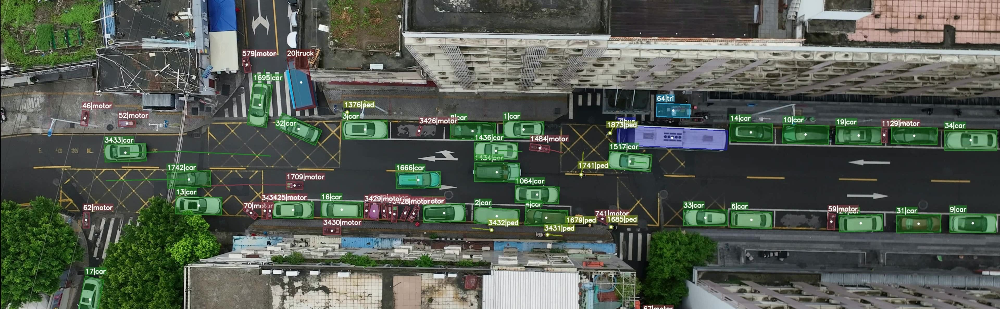
Example observations from VRUD. Colors identify participant categories and their recorded paths.
Collection Sites
VRUD covers a residential intersection (Site A), a residential street (Site B), and a mixed-use junction and adjoining streets with marked pedestrian crossings and roadside parking (Site C). Sites A and B are in Shenzhen, Guangdong, China; Site C is in Changchun, Jilin, China. Residential entrances, storefronts, and roadside activity create settings in which motor vehicles and VRUs share limited road space. All three sites use 4K resolution, an 80 m flight altitude, and a nominal frame rate of 30 fps.
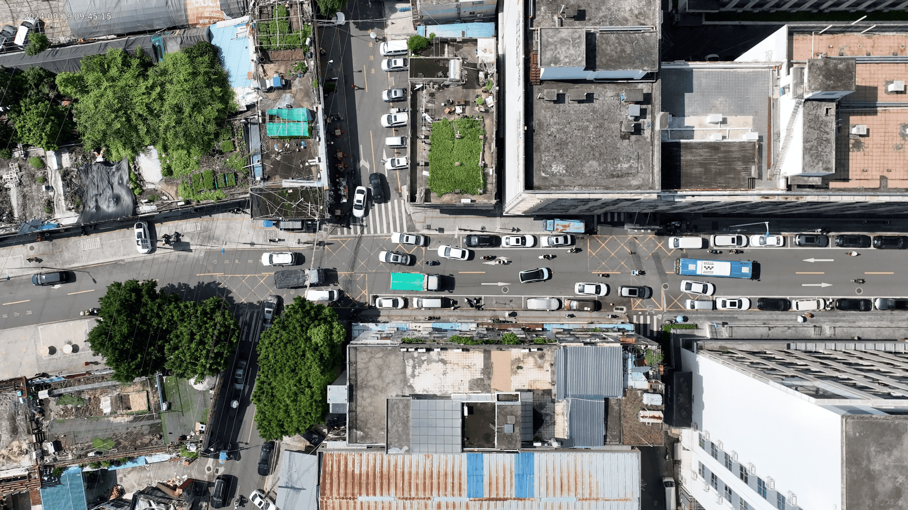
Site A: residential intersection in Shenzhen, Guangdong, China. 41 recordings, 2.41 h.
Site B: residential street in Shenzhen, Guangdong, China. 23 recordings, 1.30 h.
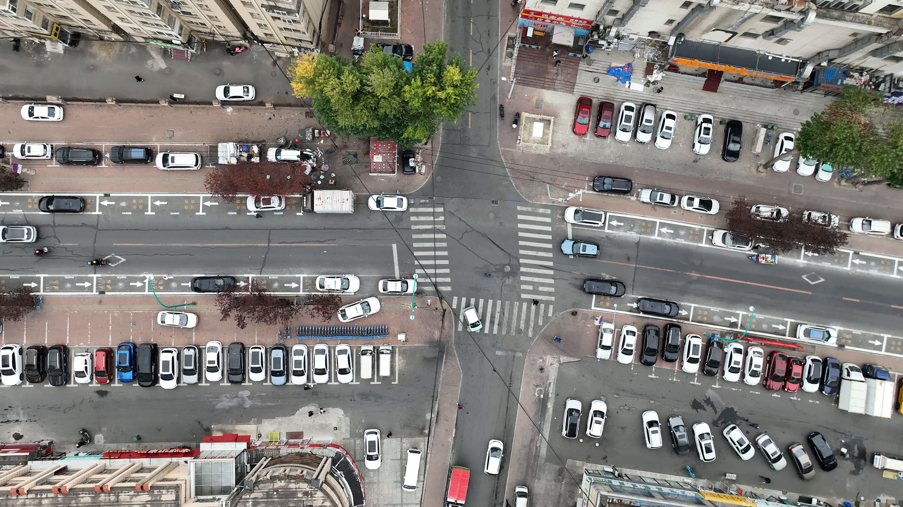
Site C: mixed-use junction and adjoining streets in Changchun, Jilin, China. 87 recordings, 4.78 h.
Sites A and B include morning and evening acquisition periods. Site C covers morning and afternoon periods on October 13, 14, 16, and 17, 2026. All 87 available recordings from those four dates are included, bringing the three-site inventory to 151 recordings and 8.50 h. Registered OpenDRIVE maps connect the trajectories and road semantics at all three sites.
Behavior-Based Organization
Relative motion, the spatial ordering of oriented road-user boxes, and registered map semantics organize behavior intervals. Each scenario is centered on a selected car, truck, or bus ego and retains multiple surrounding participants and their successive or concurrent relations. Pairwise relations supply the basic units for behavior annotation and safety-surrogate analysis within that shared scene.
The shared vocabulary comprises 13 behavior types: following a leader, approaching a moving leader, approaching a stopped target, crossing, opposing approach, completed opposing passage, side neighbor, ego passing, ego being passed, corridor entry, corridor exit, route joining context, and route leaving context. Crossing has one behavior definition for pedestrians, bicycles, tricycles, and motorcycles; participant category is analyzed separately.
All 151 recordings have been processed. The primary sustained-motion cohort contains 14,105 directed-pair–behavior intervals involving 10,264 recording-local ego–VRU pairs. Both actors must each have at least one continuous second at recorded speed of 0.5 m/s or higher somewhere in their observed tracks; temporary stops remain. Intervals may overlap across behavior types and process views.
The scene index contains 5,513 selected-ego scenes, including 4,084 with multiple related targets over the scene and 3,032 with at least two targets interacting concurrently. Surrounding targets can include VRUs and other motor vehicles. These scene counts differ from directed-pair behavior counts.
Behavior-Conditioned Interaction Profiles
Observed box clearance, constant-velocity body-contact TTC, exposure, conflict-area PET, and applicable longitudinal measures describe complementary spatial and temporal characteristics. The default TTC horizon is 5 s; initial model overlap is kept separate from future model contact.

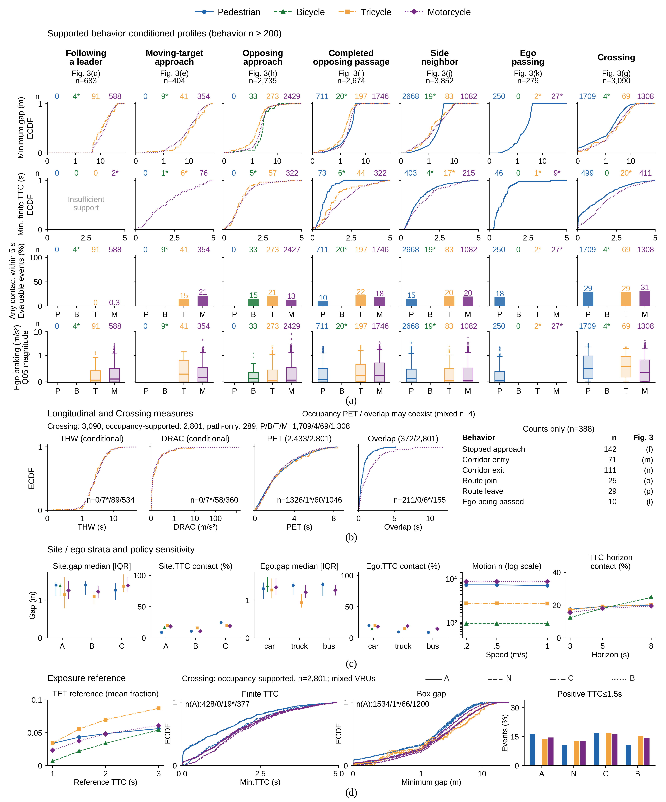
Seven behavior types with at least 200 primary intervals cover 13,717 of the 14,105 intervals (97.25%). Within each behavior–VRU–metric cell, a distribution is shown with at least 30 valid observations from at least five recordings; other cells retain their support counts. The four blocks follow manuscript subfigures (a)–(d). Open the image for full-resolution inspection.
Pedestrian participation extends beyond crossing to side coexistence, completed opposing passage, and ego passing. Tricycles and motorcycles show different clearance distributions in opposing passage, while spatial clearance and crossing-time separation offer complementary views.
The 3,090 crossing intervals comprise 2,801 with conflict-region occupancy evidence and 289 with geometric path evidence only. PET uses the occupancy-supported group; path-only crossings retain their spatial and motion evidence. The descriptive profiles support behavior and participant stratification rather than a single universal risk threshold.
Inventory Statistics

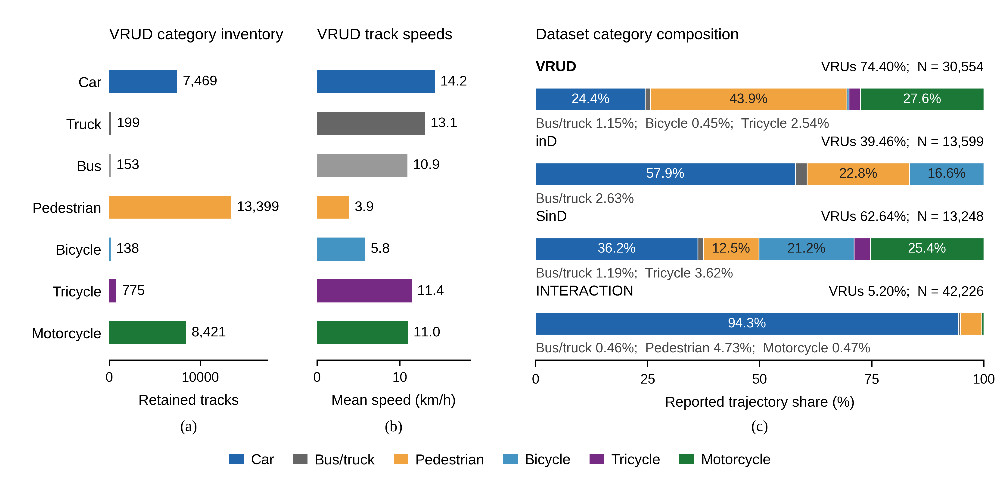
The three-site inventory contains 30,554 trajectories passing the rounded 2 m travel rule, including 22,733 VRUs (74.40%). Each retained trajectory has equal weight in the native track-speed average, including waiting. External datasets retain their original reported cohorts and movement filters, so the category comparison is not a controlled density estimate. Open the image for full-resolution inspection.
Trajectory Prediction and Scenario Diagnosis
A map-free Trajectron++ benchmark compares training on VRUD, SinD, INTERACTION, and joint-source data. Additional conditions use the focal trajectory alone, the nearest surrounding participant, or only Sites A and B for training. Seven training conditions use three random seeds (21 fitted models); the main cross-dataset comparison comprises 45 evaluation runs.
A common map-free Trajectron++ protocol uses 13,312 class-balanced training targets per condition and evaluates 1 s of observations followed by 3 s of prediction. On the held-out Site C date, the VRUD-trained model achieves class-macro minADE@6 of 0.367 ± 0.011 m, compared with 0.486 ± 0.002 m for SinD training and 0.721 ± 0.012 m for INTERACTION training. CAR and pooled pedestrian/bicycle targets receive equal weight in this macro average. Training on Sites A and B only gives 0.463 ± 0.008 m on the same test windows. Full neighboring context reduces CAR minADE@6 from 0.566 to 0.525 m. Behavior-linked analysis identifies 1,689 CAR windows; 1,603 have at least one quality-eligible detailed relation, while 1,536 satisfy the stricter pooled safety-surrogate checks. Pedestrian crossing contributes 627 clean windows across 25 recordings. These results describe one predictor and one held-out VRUD date; observed density and concurrent relations do not establish a monotonic context benefit. All ± values denote sample standard deviation across three training seeds.

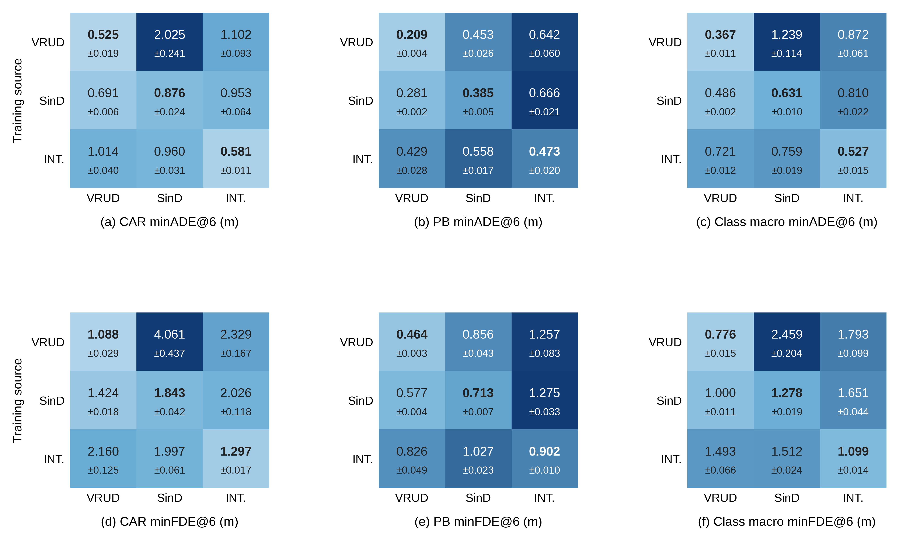
Matched-budget pure-source forecasting with the same map-free predictor. Rows indicate training source and columns indicate test source. Panels (a)–(c) show CAR, pooled pedestrian/bicycle (PB), and class-macro minADE@6; (d)–(f) show minFDE@6. Macro averages weight CAR and PB equally. Cells report the mean ± standard deviation across three training seeds in meters; bold marks the lowest displayed mean within each test column. INT. denotes INTERACTION. Color scales are separate for each panel.

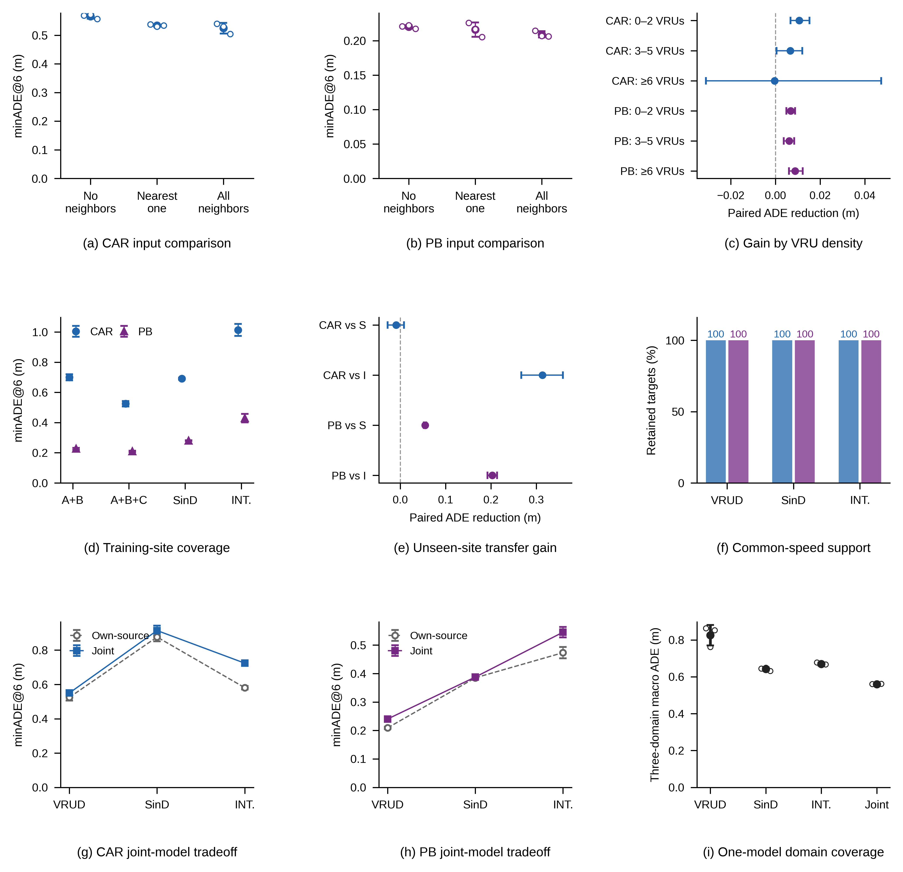
Neighbor context, site transfer, and joint training. (a,b) CAR and PB input ablations on the held-out Site C date. (c) Nearest-one minus full-context minADE@6 by the number of pedestrians, bicycles, tricycles, and motorcycles within 10 m at forecast origin: 0–2, 3–5, or at least 6. These counts describe proximity, rather than behavior relations. (d) Training-site coverage on identical test targets. (e) SinD- or INTERACTION-trained minus Sites A+B-trained errors at the excluded Site C. (f) Common-speed target retention. (g,h) Joint versus own-source models. (i) Equal-domain average class-macro minADE@6. Point bars show three-seed standard deviation; intervals in (c,e) are paired 95% recording-cluster intervals. Positive differences favor full context in (c) and Sites A+B training in (e).

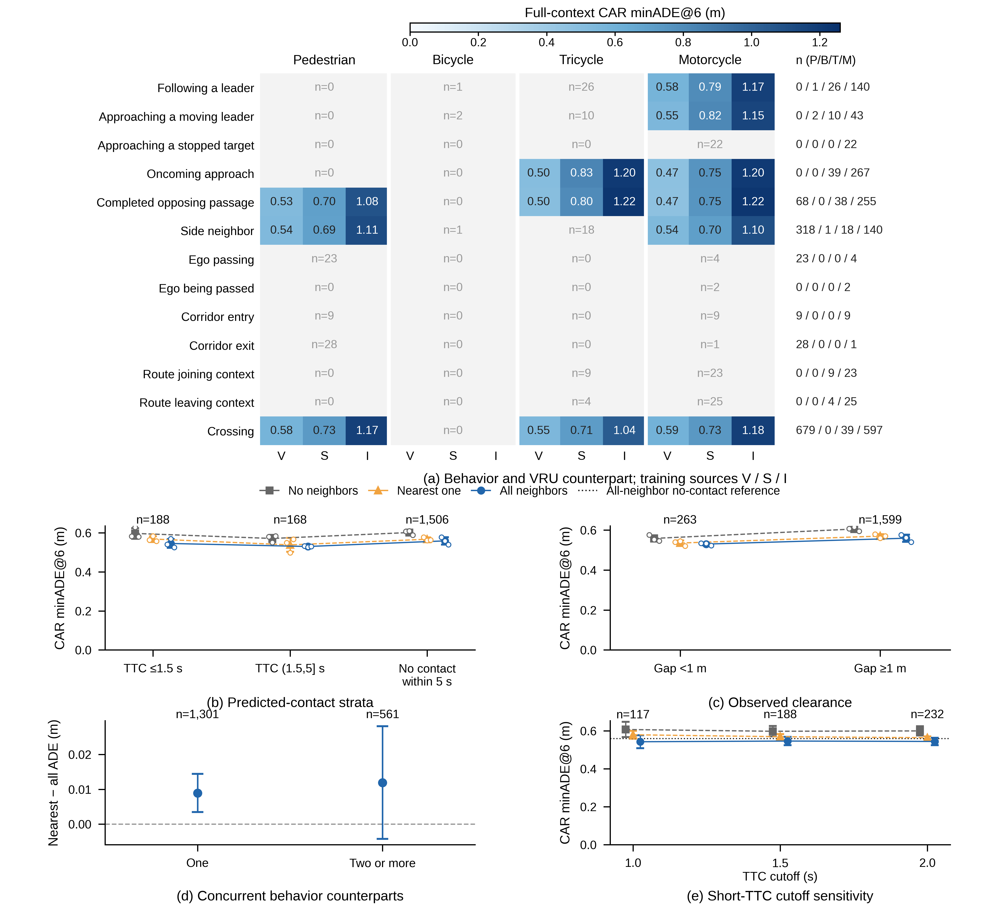
Behavior-linked CAR forecasting on the held-out Site C date. (a) Errors by road-context-supported behavior, VRU counterpart, and training source; P/B/T/M denote pedestrian/bicycle/tricycle/motorcycle, and V/S/I denote VRUD/SinD/INTERACTION. Counts are unique windows within each cell; means require at least 30 windows from five recordings. (b,c) VRUD-trained full-context, focal-only, and nearest-one errors by TTC and clearance, with three-seed standard deviation. (d) Nearest-one minus full-context minADE@6 by the maximum number of simultaneous VRU behavior counterparts; intervals are paired 95% recording-cluster intervals. (e) TTC references of 1, 1.5, and 2 s. TTC uses a 5 s extrapolated body-contact horizon. The strata describe the realized forecast interval, may overlap across behaviors, and are excluded from predictor inputs.
Data Validation
A separate controlled vehicle-following experiment compares extracted relative distance and target velocity with RT inertial navigation references. These curves describe that experiment; they do not constitute class-wise quality estimates for every trajectory in the inventory.
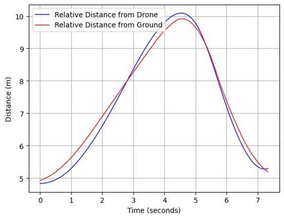
Relative distance: drone vs. RT inertial navigation
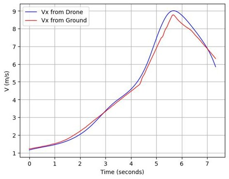
Soft target vehicle velocity (Vx) comparison
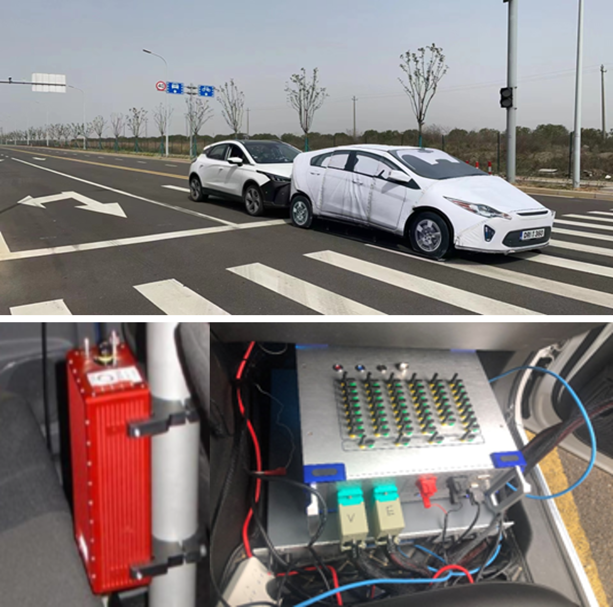
Experimental setup with RT inertial navigation equipment
Resource and Version Information
The manuscript's research material contains the following components. A request should identify the three-site inventory dated 10 November 2026 and the components needed. The application response specifies the available package version and permitted use; this page does not imply that a new raw-data release has already been uploaded.
| Component | Contents and interpretation |
|---|---|
| Trajectories and attributes | Recording-local participant IDs, observed frames, positions in meters, heading in radians, footprint dimensions, recorded motion, and seven-category labels; gaps remain explicit. |
| Registered maps | OpenDRIVE maps for Sites A, B, and C in calibrated local frames; geographic east–north orientation is not assumed. |
| Behavior and SSM records | Selected motor-vehicle ego, multiple associated participants, behavior intervals, common-observation series, applicable metrics, missing and invalid states. |
| Evaluation records | Eligibility rules, frozen prediction splits, model/seed results, behavior-linked test indices, and same-source trajectory alignment records. |
Read the machine-readable inventory description. Research access remains subject to the terms stated in the application and the supplied package.
Request Dataset Access
Apply through the laboratory application page below.
Open the access request formData Access Application
Apply through the laboratory application page. GitHub issues are no longer a data-request channel. After review, the response provides the download instructions, extraction code, and the vrud-viewer inspection toolkit.
Open the laboratory application pageThe application page describes the distributed release. For the three-site manuscript analysis, specify the research inventory date and requested components so that the response can confirm the corresponding version and availability.
Free Data Processing Service
If you have already collected — or are planning to collect — drone-view traffic flow videos in urban or mixed-traffic environments, we are happy to help with data processing.
We offer free small-batch data processing, which can include:
- Object detection and multi-class tracking
- Trajectory extraction and coordinate transformation
- HD map generation (OpenDRIVE format)
- Behavior-based interaction scenario organization and safety-surrogate analysis
Processed results will be delivered back to you by email.
For large-scale processing, commercial licensing, or any collaboration inquiries, reach us at:
Citation
The following citation identifies the VRUD preprint. The research inventory summarized on this page reflects the manuscript update dated 10 November 2026.
@misc{wang2026vruddronedatasetcomplex,
title={VRUD: A Drone Dataset for Complex Vehicle-VRU Interactions within Mixed Traffic},
author={Ziyu Wang and Hongrui Kou and Cheng Wang and Ruochen Li and Hubert P. H. Shum and Amir Atapour-Abarghouei and Yuxin Zhang},
year={2026},
eprint={2604.01134},
archivePrefix={arXiv},
primaryClass={cs.RO},
url={https://arxiv.org/abs/2604.01134},
}